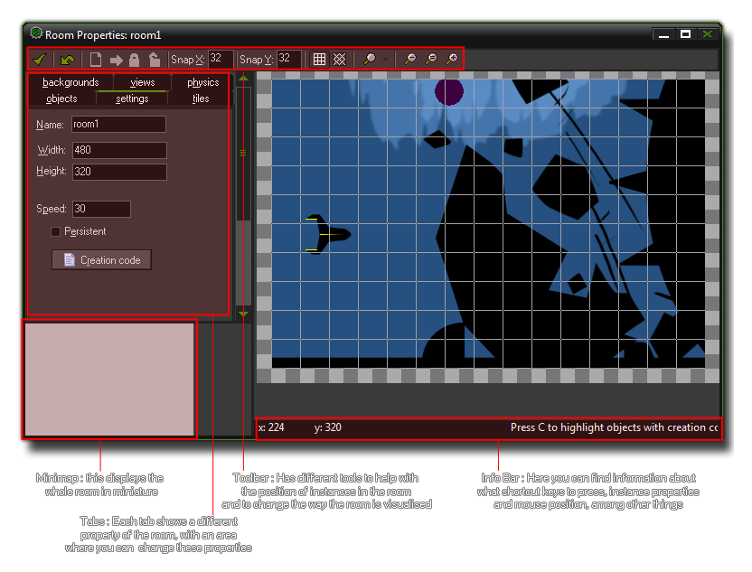
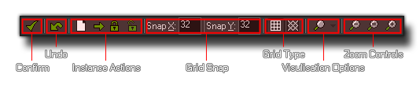

Creating Rooms
Rooms are where everything in your game happens, and this section outlines how you create them and add instances to them.
All games that you make in GameMaker:Studio need at least one room to run (but can have many, many more) , and a room is just a space where you place instances of the objects that make up your game. When you
first create a room in your resource tree you will be presented with a new window with which to edit its properties, something like this :

As you can see, most of the room editor is taken up with the a visual representation of the room itself, where you place the objects, tiles and backgrounds for your game, but around the edges there are a number of buttons,
tabs and information bars that help you to create your game.
NOTE : If you are using the Free version of GameMaker:Studio you are limited to a maximum of 5 rooms per game. For more details see
here.
The Toolbar
At the top of the form there is the tool bar, which has a number of buttons that refer to different actions in the room editor. 
- Confirm : Clicking this button will close the room editor and save any changes you have made. Beware, as this will not warn you that the room has changed, as clicking the close button would do, but will just save directly any changes you have made. However, depending on the GameMaker:Studio preferences, you may be asked if you want to remove any instances that have been placed outside the room or not.
- Undo : This is a simple, one level, undo button. By one level, we mean that only the last action performed will be undone.
- Instance Actions : These buttons allow you to change certain properties of the instances (and tiles if you are in the "Tile" tab) in the room, specifically : clearing all instances from the room, shifting all instances a set amount along the x and/or y axis of the room, locking instances (so they cannot be moved or edited) and unlocking instances.
- Grid Snap : These values can be changed to make instances snap to a different grid resolution. A value of 0 will switch snapping off.
- Grid Type : Switch the grid between standard 2D and isometric 2D formats.
- Visualisation Options : By clicking this you will open a drop-down menu where you can switch on or off the visualisation of many room elements, like instances, tiles, views etc...
- Zoom Controls : The main view of the room editor can be zoomed in and out to show more or less detail either using these controls or by scrolling the mouse wheel (if you have one).
- Instance Order and Shortcuts : Both these buttons will bring up separate windows, with the first giving you the option to change the order in which instances are created at room start (see the Room Settings page for more information), and the second shows the available keyboard shortcuts that you can use when editing rooms.
The MiniMap
As you can imagine, this is a miniature representation of the whole room. you can click and drag the current area around on the minimap and the main view will scroll and pan to match, or you can just click on the minimap to have
the main view jump to that position.
The Info Bar
While placing tiles and instances within a room, you often need extra information about them at a glance. For that you have the Info Bar which shows the current mouse position within the room, the id and object_index of the instance
that the mouse is currently over, and further context sensitive information like whether the instance has code or not in its room create event.
The Tabs
At the left you will see six tabs that open separate sub-pages in the area on the left, but in this section we will only deal with the three most important ones : The settings tab, the backgrounds tab and the objects tabs. Further information on these tabs can be found in the sections below :
For information on the other tabs as well as the advanced functions available to you in the room editor please see the section - Advanced Use : More About Rooms.